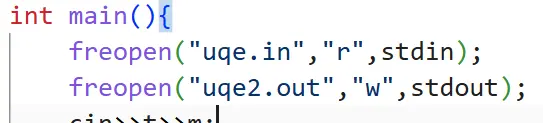
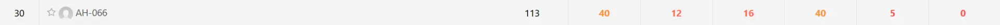

OI 回忆录
这是一篇姗姗来迟的文章。
本人坐标 AH，OI 生涯：2020.7.12~2026.7.2，大约 \(6\) 年。
这年，我初三。
现在该转入正文了。
起步阶段
四年级的我在一位小学老师 ldy6314 的指引下接触到编程。依靠当年我还算可以的数学水平，我在 3 个月的时间学完语法部分，达到市赛二等奖水平。当时，这纯粹只是一门兴趣，我也从没想到我会真正走上 OI 道路。
在五年级，我打了第一场 ccf 举办的比赛（CSP-J 2021），当时我水平比较低，再加上 T1 挂了 \(10\) 分，喜提二等奖。在这一年，我进入当地小机构继续学习 C++（毕竟那算不上 OI）。
六年级，我成功通过 CSP-J2022 与 CSP-S2022 的复赛，准备冲 CSP-S 一等奖。然后因疫情原因我们小区被封了。整个 AH 的复赛都没了，伤心。
靠着小学还能看的 whk 成绩，我爬进了当地一所强校。
竞赛生涯
六年级暑假，我去 ZJ 某校参加第一次 OI 集训。当时我还不懂要卷，觉得自己在 AH 的水平够了，比较自我满足，加上实际水平低下，一个星期只学会了一个莫队，而且还是普通版。呜呜呜我好菜。
初一
这年，我同时参加 CSP-J2023 与 CSP-S2023，均通过初赛。
J 组复赛，我最后一题写了 spfa，当时我以为 spfa 复杂度按 \(O(m)\) 算就行了，只有极少数情形被卡，与实际出题人爆卡 spfa 形成鲜明对比。出场时，估分 \(400-eps\)。
S 组当时我 30min 写了 T1，接着一眼秒了 T2 的 \(35\) 分，但随即发现 T3 是无脑模拟题，就没写那 \(35\) 分，狂冲 T3 2h，一直调不出来。当时我记错结束时间了，记早了半小时。在我以为还剩 10min 时切回 T2，在这 10min 内拿到 \(50\) 分。后来才发现记错时间了。最后 30min 看了 T4 不会，转回 T3，还是做不出。出场时，估分 \(150+eps\)。
后来发现某机构给我 CSP-J2023 T3 估了 \(0\) 分，何意味？
我看了压缩包里我的代码，看到这几行，气笑了。

\(100\rightarrow0\)。
最终得分：J 组 \(285\)，S 组 \(155\)，双一等。获得 \(6\) 级蓝钩。
突然听说自己能去 NOIP？
然后去了。在 WH。去玩了一趟。考了 \(165\)，又是一等奖。
突然听说自己能去联合省选？
然后去了。又在 WH。又去玩了一趟。

一个初一，感觉一直在 whk，也不知道自己学了什么 OI 知识。这个初一算是浪费掉了。
初二
暑假去 zr 的 C 班集训，感觉不错。在那个期间，我的刷题数远超之前任意时刻。学明白了部分知识点，感觉水平有所提升。
不过开学后 whk 英语水平狂掉，语文英语互斥定律生效。在这种情况下，我不得不把精力更多地放在 whk 上。因此，oi 模拟赛我打了不到 \(45\%\)。
这年我没报 CSP-J，只打 S 组。当时大概是不怎么会 greedy，然后 T3 就没做出来。由于我不会期望，T4 爆零。最终喜提 \(265\) 分。获得 \(7\) 级蓝钩。后来得知 WaterM 拿了 \(300\) 分，有点玉玉。
然后 NOIP 是真爆了。T1 我场上很快想到正解，但是不会证明我的 greedy idea 是对的，然后就写了 \(60\) 分部分分，T2 由于暑假线性代数学废了，也只会 \(60\) 分。T3 看了一个大样例，怎么全是 \(1\)？拿了 \(4\) 分。T4 正常发挥，\(32\) 分。后来得知我 T1 只有 \(40\) 分，总分才 \(136\)。那年我们省只有 \(58\) 个省一，线划在 \(145\)。那一刻，我明白，省选大抵是凉了。
或许是因为一等没有女生吧，或许是因为觉得 2= 选手有翻盘机会吧，又或许是其他什么原因吧，这次省选允许 2= 选手参加！
寒假加训了若干知识点，准备省选翻一点盘。
奈何省选又炸了，\(100+20+8+60+16+12=212\)，似乎连 \(3\) 倍线都没进。人家 Oken 初一就已经达到队线了，怎么办？
这个省选，印象最深的大概还是这个吧：
我常常追忆过去。
……
我该在哪里停留？我问我自己。
见 [省选联考 2025] 追忆。
后来把这一段话背会了，似乎并没有什么用。
然后我把我 qq 上的生日改成了 2025.3.1，就是追忆的生日。
后来学校给我们 OIers 请了教练，结识了 Rosaya，感觉好强。
后来重做 recall，感觉好水。我场上为什么做不出呢？哦我场上连 bitset 是什么都不知道。
初三
如果说严格一点的话，我的竞赛生涯也许只有这一年。
暑假去 zr B 班集训，进步还可以。
把 AH 一位初三一年斩获 noiwc,apio,noi 三枚银牌的超级大神 huangleyi0129 的头像扔给 ai 改了一下，作为我现在的头像。希望这能给我的初三 OI 生涯带来一点好运。
回去打 CSP-S 和 NOIP 联测。唯一一场能够 ak 的 CSP-S 场次我是 vp 的，伤心。不过，确实登顶了一次。没想到这也是最后一次。
结果正赛 CSP-S 出得怪难的。花了 1.25h 创出 t1t2，用一个赛场上临时发明的非常菜的“递归树套字典树”水过 t3 大样例，最后剩 eps 分钟，打了 t4 的 \(8\) 分做法。估分 \(308\)，感觉 noiwc 有了，高兴出场。
回到家，看到洛谷犇犇，意识到自己倒闭了：
t3 \(100\rightarrow 0\)。
在重度抑郁的情况下度过两三天，忽然听说没卡 \(|t1|\ne|t2|\)，高兴坏了，查分，\(100+80+95+8=283\)。
正赛卡常！太邪恶！
感觉 noiwc 线就在这几分之间，去申诉，花了 \(100\) 块钱。
结果申诉结果在获奖名单发布后好几天才发布。所以 ccf 真的管了这些申诉吗？/fn
AH rk16，初中生 rk1，还好吧。似乎擦在 noiwc 线边缘。
noip2025 前停课加训了 1.5 个月。准备冲一把省队。
然后 noip 被 [NOIP2025] 清仓甩卖 控了 3h+，写的 t3t4 暴力都挂完了，最后时刻还把写好的 t2 代码改 CE 了。最终~~喜提~~ \(100\) 分。
那天，我回到家，吃了饭，睡觉，睡到 17:00 才起床。起来看 t2 题解。怎么是一道唐题？为什么场上想不到呢？
那一刻，我明白，手上剩的牌，或许只有 whk 了。我必须学会面对这个事实。
得知 noiwc 报上名了，算是一点安慰。
回学校补 whk。被 wfc 在 noip/whk 上二维偏序了。唉。
不过这一段也算是开挂了，我之前就从来没考过年级前 \(5\)。
寒假先卷了一段 oi，直到 noiwc 开始。
noiwc2026 这段经历，参见我的游记。
离银牌线差 \(4\) 分，有点伤心，但我的目标就是不打铁，能拿金钩已经是 happy ending 了。
省选前加训 Ynoi，全省我最唐。
省选打了 \(100+20+12+100+12+0=244\)，释然了。
把 impossible 打成 imposssible 了。
我似乎 noip 打 \(300\) 分都进不了队。
然后滚回去补 whk 了。
后续
然后发生什么了呢？我在多位同学的影响下报了 ustc 的少创考试，本来打算去玩一趟的，没想到真过入围了？！
早就厌倦了纯 whk 生活的我决定停课冲营一。然后营一拿了 \(88+24=112\)。
然后营二就不停课了，周末去围观集训。
然后营二怎么加试考了数学？！
然后就拿下了。A 档，特控线上 ustc。
当时拿到档的时候直接飘了，二模数学半做不做地考，英语作文玩梗（有一个 starmap，有一个 recollector，没有 recall 是因为动词用法不太会），然后中考二模数学考了 \(138/150\)，英语全班倒数前十五。遭报应了。
在学校压力下停课去卷高考。进步还算快的。
高考 \(592>514\)。
然后剩余 \(4\) 天闪击中考，中考 \(705/750\)，一般吧。
总之是上岸了。
然后嘛。
你别说，我确实纠结了很久。毕竟，奋斗了 \(6\) 年，还没真正上战场就退役了的感觉并不好。
但后来发现强基计划对 Ag 生的政策越来越不友好，加上我对我的 whk 水平没有任何自信，竞赛冲 Au 几乎不可能，大概率考不上 t/p，走了算了吧。
鸣谢
- 感谢 ccf 组织的一系列比赛，虽然花了不少钱。
- 感谢 ldy6314,aboluo2003,Rosaya 等老师的培养，感谢 clb 等老师提供暑假集训。
- 感谢队长 Purslane 的指导，感谢 Purslane fans' club 和 Huangleyi0129 fans' club 的群友们同我交流。
- 感谢我的 whk 老师、同学。
- 感谢家人的支持。
- 感谢我自己，感谢 OI。
后记
在退役之际，回首过往，发现每一场比赛都有能提升的地方，或许因为卡常丢掉的几十分，或许是粗心打错单词丢掉的分数，又或许是做出 recall 或者 sale 之类的。但此时此刻，我也并不对此感到遗憾——最多就是可惜吧。毕竟：
我们付出过，我们努力过，我们都对此拼搏过。
愿我们都能保持对算法竞赛的热爱，愿一切都好。
抓住和抓不住的照片 哪张更美
去过和没去过的地方 哪里更远
白鸟我的白鸟
你要飞得更高不要回来
若还想与我相见
就来我的梦里边……
下图是我 OI 时代收集到的一些东西。

祝大家 NOI 都能和我的中考同一个分数。
中考 \(705\)。
暂别。